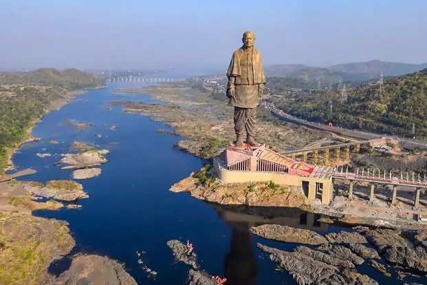
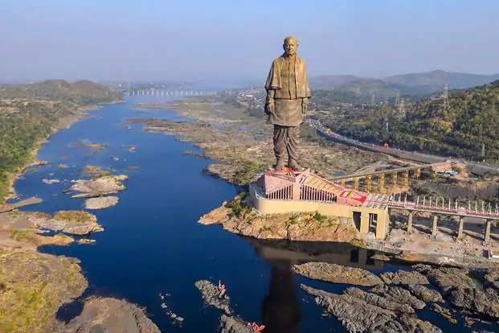

Your Journey is our priority
ASIATRIP is a webside that providing the informations about the the beautiful places in ASIA, also helping and asist you to choose your best trip and unforgettable memories.
 



 india
india
 China
China
Bangkok
Thailand
A city that never sleeps, Bangkok, the capital of Thailand is a modern-day melting pot of contrasting cultures and faiths. Here, towering skyscrapers stand in harmony next to temples and monasteries. The luxury malls and shopping centres compete with the street bazaars and floating markets.
$300
Continue Reading
Phuket
Thailand
The largest island in Thailand, Phuket has everything the country offers. It is located in southern Thailand, on the Andaman Sea coastline. Serviced by the Phuket International Airport, the island sees no shortage of travelers at any time of the year. Golden beaches, numerous offshore islands, upbeat markets, a high-octane nightlife, and thrilling watersports characterize Phuket. It is also one of the fastest-accessible beach destinations in Thailand.
$250
Continue Reading
Ko Tao
Thailand
Ko Tao is an island in Thailand. Restaurants, nightspots and dive shops cluster in Mae Haad Beach and near Sai Ri Beach. Villas dot palm-fringed beaches such as Chalok Baan Kao Bay, on the south coast. In the northwest, Koh Nang Yuan is a group of islets with hilltop views. Ko Tao is known for its tropical coral reefs, with species including whale sharks and rays. Hawksbill and green turtles gather here to breed.
$250
Continue Reading
The Big Buddha, Phuket
Karon, Thailand
Phuket Big Buddha, or The Great Buddha of Phuket, is a seated Maravija Buddha statue in Phuket, Thailand. The official name is Phra Phutta Ming Mongkol Eknakiri, shortened to Ming Mongkol Buddha. Sitting atop Nakkerd Hill near Chalong, construction began in 2004. Expansion of the base was ongoing as of 2015.
$200
Continue Reading

Chiang Mai
Thailand
Chiang Mai is a city in mountainous northern Thailand. Founded in 1296, it was capital of the independent Lanna Kingdom until 1558. Its Old City area still retains vestiges of walls and moats from its history as a cultural and religious center. It’s also home to hundreds of elaborate Buddhist temples, including 14th-century Wat Phra Singh and 15th-century Wat Chedi Luang, adorned with carved serpents.
$200
Continue Reading
Bali
Indonesia
Bali is a province of Indonesia and the westernmost of the Lesser Sunda Islands. East of Java and west of Lombok, the province includes the island of Bali and a few smaller offshore islands, notably Nusa Penida, Nusa Lembongan, and Nusa Ceningan to the southeast.
$220
Continue Reading

Gili Islands
Indonesia
The Gili Islands are a group of 3 tiny islands – Gili Trawangan, Gili Meno and Gili Air – in Indonesia, near the coast of northwest Lombok Island. Characterized by sandy beaches fringed with palm trees, they're known for their coral reefs just offshore. On the smallest island of Gili Meno, sea turtles swim at Turtle Point. At Gili Trawangan, the largest island, a sunken ship sits at Wreck Point near Mentigi Beach.
$250
Continue Reading
Prambanan Temple
Indonesia
Prambanan is a 9th-century Hindu temple compound in the Special Region of Yogyakarta, in southern Java, Indonesia, dedicated to the Trimūrti, the expression of God as the Creator, the Preserver and the Destroyer.
$240
Continue Reading
Uluwatu Temple
Indonesia
Uluwatu Temple is a Balinese Hindu sea temple located in Uluwatu. The temple is regarded as one of the sad kahyangan and is dedicated to Sang Hyang Widhi Wasa in his manifestation as Rudra.
$250
Continue Reading

Borobudur
Magelang Regency, Central Java, Indonesia
This famous Buddhist temple, dating from the 8th and 9th centuries, is located in central Java. It was built in three tiers: a pyramidal base with five concentric square terraces, the trunk of a cone with three circular platforms and, at the top, a monumental stupa. The walls and balustrades are decorated with fine low reliefs, covering a total surface area of 2,500 m2. Around the circular platforms are 72 openwork stupas, each containing a statue of the Buddha. The monument was restored with UNESCO's help in the 1970s.
$250
Continue Reading
Angkor Wat
Siem Reap, Cambodia
Angkor Wat is a Buddhist temple complex in Cambodia, located on a site measuring 162.6 hectares. It resides within the ancient Khmer capital city of Angkor. The Guinness World Records considers it as the largest religious structure in the world.
$330
Continue Reading
royal Palace
Samdech Sothearos Blvd, Phnom Penh, Cambodia
The Royal Palace is one of the attractive places to visit in Cambodia. The palace serves as the supreme estate of the King of Cambodia. It is a fine example of Khmer architecture with a little touch of French. The ornate buildings and grounds provide an intriguing insight into the history.
$340
Continue Reading
Tuol Sleng Genocide Museum
St.113, Boeung Keng Kang III, Khan Boeng Keng Kang, Phnom Penh, Cambodia
Tuol Sleng Genocide Museum is the memorial site of the S-21 interrogation and detention center of the Khmer Rouge regime. Located in the heart of Phnom Penh, it preserves evidence of a tragic period in Cambodian history with the aim of encouraging visitors to be messengers of peace.
$250
Continue Reading
koh Rong
koh kong, Cambodia
Koh Rong is an island in the Sihanoukville Province of Cambodia. It’s known for its sandy coves and coral reefs, like those around Koh Rong Pier. Inland, the dense jungle terrain is dotted with coconut palms and waterfalls.
$200
Continue Reading

Bayon
Angkor Thom, Siem Reap, Cambodia
Bayon Temple is a marvel of ancient engineering and craftsmanshipIts intricate design and breathtaking architecture make it a must-see attraction, leaving visitors in awe of the skill and dedication that went into its construction.
$360
Continue Reading
Taj mahal
Agra, Uttar Pradesh, India
Majestically located on the banks of Yamuna River, this wonder of the world was built by the Mughal Emperor Shah Jahan as a memorial for his beloved wife Mumtaz Mahal.
$440
Continue Reading
statue of unity
Narmada Valley Kevadiya, Narmada, Gujarat, India
Located about two hours from Vadodara, the Statue of Unity is dedicated to the Iron Man of India, Sardar Vallabh Bhai Patel. It stands proud at the Sandhu Bet island, overlooking the Sardar Sarovar Dam.
$350
Continue Reading

golden temple
Amritsar
Also known as Sri Harmandir Sahib, Golden Temple is considered to be the most important pilgrimage site amongst Sikhs and will leave you in awe with its jaw-dropping gold and marble edifice.
$360
Continue Reading
baga beache
Goa, India
One of the most popular beaches in Goa, Baga Beach offers quirky beach-side shacks and a number of thrilling water sports.
$170
Continue Reading
Nageshvara Jyotirlinga
Aundha Nagnath, Maharashtra, India
Nageshwara Jyotirlinga is a temple and pilgrimage site devoted to Shiva and houses one of the twelve Jyotirlingas. It is located in Aundha Nagnath, Maharashtra. The Shiva Purana says Nageshvara Jyotirlinga is in 'the Darukavana', which is an ancient name of a forest in India.
$200
Continue Reading
great wall of China
China
The Great Wall of China is a series of fortifications that were built across the historical northern borders of ancient Chinese states and Imperial China as protection against various nomadic groups from the Eurasian Steppe.
$450
Continue Reading
Emperor Qinshihuang's Mausoleum Site Museum
Xi'an, China
Emperor Qinshihuang's Mausoleum Site Museum was built based on the Mausoleum of Emperor Qin Shi Huang, which was historically known as Lishan Garden and is the largest imperial tomb in China with the richest buried objects.
$260
Continue Reading
Temple of Heaven
Beijing, China
The Temple of Heaven is a complex of imperial religious buildings situated in the southeastern part of central Beijing. The complex was visited by the Emperors of the Ming and Qing dynasties for annual ceremonies of prayer to Heaven for a good harvest.
$300
Continue Reading
Mount Tai
Shandong, China
Mount Tai is a mountain of historical and cultural significance located north of the city of Tai'an. It is the highest point in Shandong province, China. The tallest peak is the Jade Emperor Peak, which is commonly reported as being 1,545 meters tall.
$250
Continue Reading

Zhangjiajie National Forest Park
Zhangjiajie, Hunan, China
Zhangjiajie National Park is located in the central-eastern area of China in the Wulingyuan Scenic Area which features multiple protected areas. The national park encompasses an area of 18.59 square miles (48.15 sq km). It is a GANP Ambassador Park.
$380
Continue Reading
Tokyo Tower
Tokyo, Japan
The Tokyo Tower is Japan’s second tallest skyscraper, standing 333 meters tall, with its Observatory Deck present at 150 meters of height. This tower is 3 meters taller than the Eiffel Tower, the model for its construction. The tower’s main deck has glass floors called the SkyWalk Windows or lookdown windows, providing a thrilling experience when you move around this floor. The Top Deck is 250 meters high and provides a bird's eye view of Tokyo.
$360
Continue Reading
mount fuji
Fuji-Hakone-Izu National Park, Japan
Mount Fuji, highest mountain in Japan. It rises to 12,388 feet (3,776 metres) near the Pacific Ocean coast in Yamanashi and Shizuoka ken (prefectures) of central Honshu, about 60 miles (100 km) west of the Tokyo-Yokohama metropolitan area.
$350
Continue Reading
Osaka Castle
Osaka, Japan
Osaka Castle is a Japanese castle in Chūō-ku, Osaka, Japan. The castle and fortress are one of Japan's most famous landmarks and it played a major role in the unification of Japan during the sixteenth century of the Azuchi-Momoyama period.
$340
Continue Reading
Fushimi Inari-taisha Shrine
Fushimi-ku, Kyoto, Kyoto, Kyoto Prefecture, Japan
Inari is the Shinto god of rice – one of the most important gods in Shintoism. Of the thousands of shrines dedicated to him, Fushimi Inari is decidedly the most important. Most travelers come to see the vermilion gates, but the shrine itself is also open for exploration, and the buildings are quite spectacular.
$230
Continue Reading
Itsukushima Jinja
Itsukushima, Japan
Itsukushima Shrine is a Shinto shrine on the island of Itsukushima, best known for its "floating" torii. It is in the city of Hatsukaichi, in Hiroshima Prefecture in Japan, accessible from the mainland by ferry at Miyajimaguchi Station.
$330
Continue Reading
N Seoul Tower
Seoul, South Korea
The N Seoul Tower, officially the YTN Seoul Tower and commonly known as Namsan Tower or Seoul Tower, is a communication and observation tower located on Namsan Mountain in central Seoul, South Korea. The 236-meter-tall tower marks the second highest point in Seoul and is considered a local landmark.
$270
Continue Reading

Gyeongbokgung Palace
Seoul, South Korea
Gyeongbokgung, also known as Gyeongbokgung Palace, was the main royal palace of the Joseon dynasty. Built in 1395, it is located in northern Seoul, South Korea. The largest of the Five Grand Palaces built by the Joseon dynasty, Gyeongbokgung served as the home of the royal family and the seat of government.
$230
Continue Reading
Garden of Morning Calm
Gapyeong County, South Korea
The Garden of Morning Calm is an arboretum located at the east of Seoul, in the Gapyeong district of South Korea. On 300,000 m², it houses 5,000 species of plants, some rare or endangered and attracts 600,000 tourists per year.
$140
Continue Reading
Bukhansan National Park
Seoul, South Korea
Popular among hiking enthusiasts, Bukhansan National Park is located just outside the city of Seoul. Embark on the popular and easiest Bukhansanseong Course to Baegundae Peak, which is the park’s highest point.
$190
Continue Reading
Haeundae Beach
Busan, South Korea
The beach is laden with rows of lights and lights designed as castle, trees and love signs. The beach is crowded with locals and tourists taking pictures among the light. There a some locals with small fireworks on the beach which adds to the entertainment to the crowd. A must place to see.
$200
Continue Reading